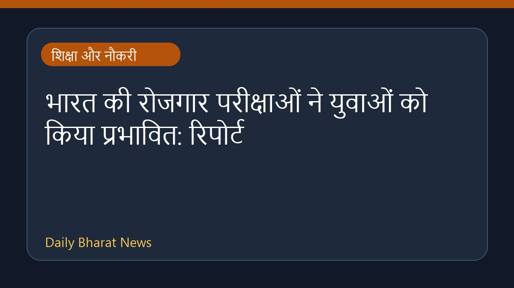

भारत की रोजगार परीक्षाओं ने युवाओं को किया प्रभावित: रिपोर्ट

रॉयटर की एक रिपोर्ट के अनुसार, भारत में रोजगार परीक्षाओं और उनसे जुड़ी व्यवस्थाओं ने युवाओं के बीच असंतोष को बढ़ा दिया है। इस स्थिति ने राजनीतिक स्तर पर भी प्रभाव डाला है, जिससे प्रधानमंत्री नरेंद्र मोदी के खिलाफ युवाओं की सोच में बदलाव देखा गया है। रिपोर्ट में परीक्षा प्रणाली की कमियों और उससे उत्पन्न होने वाली बेरोजगारी की समस्याओं पर प्रकाश डाला गया है, जिसके कारण नौकरी चाहने वाले युवाओं में निराशा और नाराजगी बढ़ रही है। इस विषय पर विस्तृत जानकारी अभी सीमित है।
मूल स्रोत: Education News Sources
Insight: How India’s employment exams turned its ‘cockroach’ youth against Modi - Reuters ↗
Insight: How India’s employment exams turned its ‘cockroach’ youth against Modi - Reuters ↗